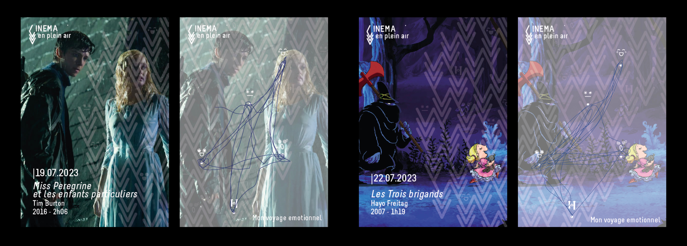
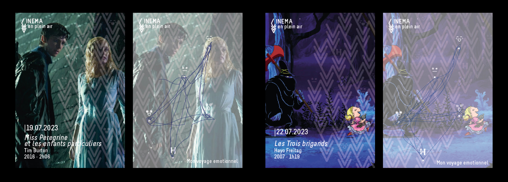

UN BILLET POUR UN VOYAGE ÉMOTIONNEL
Et si on repensait l'identité visuelle du Cinéma en plein air de La Villette à Paris ? Dans le cadre d'un projet fictif, j'ai souhaité rendre compte du voyage émotionnel que le cinéma offre à ses spectateurs. À travers une sélection soignée de films et de courts métrages, La Villette offre un espace où les émotions peuvent être partagées librement, dans un parc propice aux échanges et aux rencontres, bien loin de l'atmosphère souvent cloisonnée des salles de cinéma. Pendant deux mois, un voyage émotionnel est offert gratuitement, nous transportant des éclats de rire aux larmes, de l'incompréhension à la peur, à l'émerveilleme,t. Dans ce contexte, il s'agit de concevoir une identité visuelle pour cet événement, tout en préservant l'essence même du lieu. Cela implique la création d'affiches, de programmes sous forme de flyers, de produits dérivés, ainsi que de cartes à collectionner. Ces dernières, une fois complétées à l'aide d'un stylo, permettront de tracer le parcours émotionnel vécu pendant le film, laissant ainsi une trace tangible de ces moments précieux.
 
